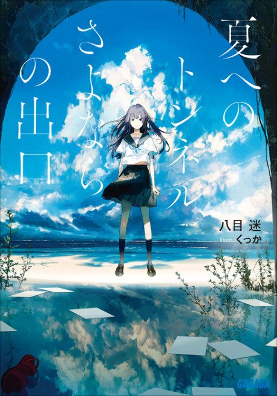

Anime

Light novel2022 · Drama, Romance, Supernatural
The Tunnel to Summer, the Exit of Goodbyes
夏へのトンネル、さよならの出口
AniList8.0
Animeter—
Movie1 ep
SourceFilm
Anime finished. Where does the story go next?
StatusFully adapted
The film adapts the single-volume light novel, so the whole story is covered.
11
Movie